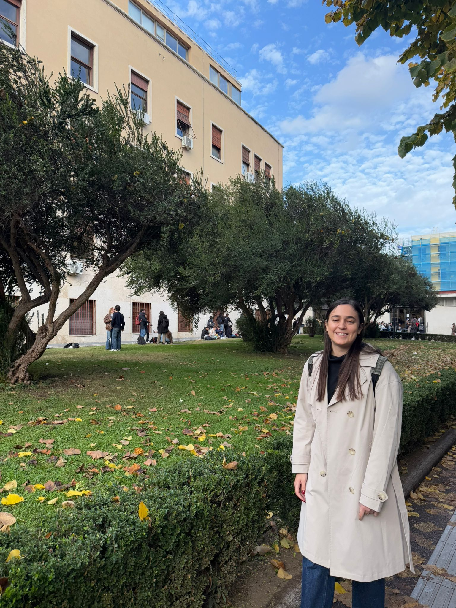

Industrial Engineering & Management Student · Customer Success Engineer
Get In TouchI'm a fourth-year Industrial Engineering and Management student at Ben-Gurion University of the Negev, specializing in Intelligent Systems. I'm passionate about AI, Machine Learning, and Information Systems.
I love learning — whether it's a new language, a new technology, or a new culture. Last year I had the incredible opportunity to participate in a student exchange program in Rome, Italy, which was one of the most enriching experiences of my life. I'm always looking for my next adventure.
Currently working as a Customer Success Engineer, I'm eager to keep growing professionally and looking for my next opportunity. I bring strong leadership skills from my background as an IDF officer, where I managed a team of 40 people.

Data analysis, scripting, and automation
Object-oriented programming and algorithms
Database queries and data management
Data visualization and business intelligence
ERP systems and productivity tools
Web development — like this very website!
Working in a technical customer-facing role, combining engineering knowledge with strong interpersonal and leadership skills.
Fourth-year student specializing in Intelligent Systems. Interests include AI, Machine Learning, and Information Systems. Participated in a student exchange program in Rome, Italy.
Lead and manage the Ben-Gurion Technological branch of ProWoman. Organize lectures and networking events with senior women leaders from the industry.
Managed end-to-end hiring processes for senior technical positions. Proficient in SAP and internal HR systems. Served as contract manager for new employees.
Led a psychotechnical unit and managed a team of 40 interviewers. Oversaw personal interview processes for hundreds of candidates daily across multiple teams.
I speak Hebrew, English, and Spanish — and I'm always looking to learn more.
From my exchange in Rome to international delegations in Denmark and Belgium — I love exploring the world.
Whether it's a new skill, a new culture, or a new technology — I'm always eager to grow.
From teaching English in high schools to leading the Shoham Scouts branch for years.
I'm seeking my next opportunity — let's connect!